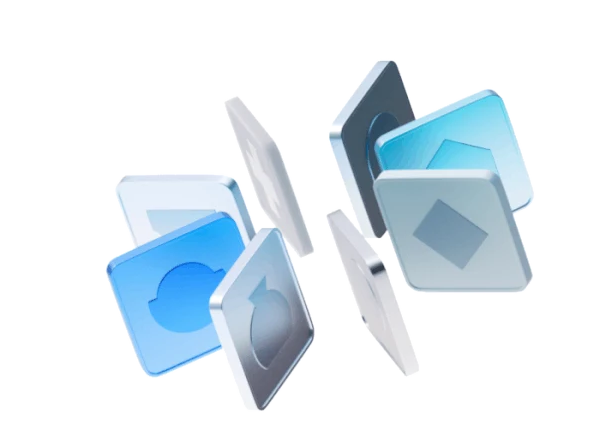

지난 시연 · 6월
눈에 보이는 ‘화면’
을 그리는 시간
프론트엔드
- 기획 의도 설명
- 코드 생성 요청
- 결과 화면 확인
- 세부 기능 수정

6월에는 자연어로 AI에게 지시하여 영어 학습앱 화면을 만들었습니다.
오늘은 그 화면에 데이터를 저장하고, 외부 기능을 연결하고, 여러 사람이 함께 사용하도록 확장하는 과정을 알아봅니다.
대화창을 눌러 무엇을 만들지 적습니다
화살표 버튼을 눌러 작성을 요청합니다
만들어진 화면이 그 자리에서 열립니다
본문 글씨를 키우려고 다시 지시합니다
여기까지가 6월 교육의 전부입니다 — 아래로 스크롤
입력한 내용을 저장하고 다시 쓰는 구조
기록이 남아야 다음 사용으로 이어집니다
무엇이 불편한지 짚습니다
무엇을 남길지 정합니다
어디에 저장할지 정합니다
기록이 쌓이는지 봅니다
| 날짜 | 학습 | 점수 |
|---|---|---|
| 08.25 | 독해 · 듣기 | 82 |
| 08.24 | 말하기 | 76 |
| 08.23 | 독해 | 91 |
1. 관리할 데이터를 선택하세요
2. 데이터를 저장할 공간을 선택하세요
프로그램 밖의 AI · 정보 · 기능을 연결해 쓰는 구조
필요한 기능은 외부 서비스와 연결해 확장합니다
무엇이 안 되는지 짚습니다
어떤 능력을 끌어올지 정합니다
쓸 수 있는 권한을 받아옵니다
실제로 답하는지 봅니다
외부 AI의 능력을 내 프로그램에서 쓰려면
사용 권한(Key)을 먼저 받아야 합니다.
API Key가 복사되었습니다
업무 하나를 골라 세 가지만 확인합니다 — ① 어떤 정보를 남길 것인가, ② 어떤 AI · 정보와 연결할 것인가, ③ 누가 어떻게 함께 쓸 것인가.
이 세 가지가 정리되면 필요한 기능이 훨씬 선명해집니다.
하나의 영어 학습기를 계속 확장해 가며 전체 구조를 이해합니다.
직접 코딩 실습 없이 실제 사례의 전 과정을 시연으로 보고, 조직에서 바꿀 업무를 구체화합니다.
※ 수준진단은 교육 당일 테스트가 아닙니다. 사전 진단 결과는 개인 점수 · 순위화 없이 임원 본인의 인식과 직원 체감의 차이를 교육 인트로에서 보여주는 용도로 활용합니다.
우리 본부 업무 하나를 바꾼다면,
무엇을 남기고 · 무엇과 연결하고 · 누가 함께 써야 할까요?